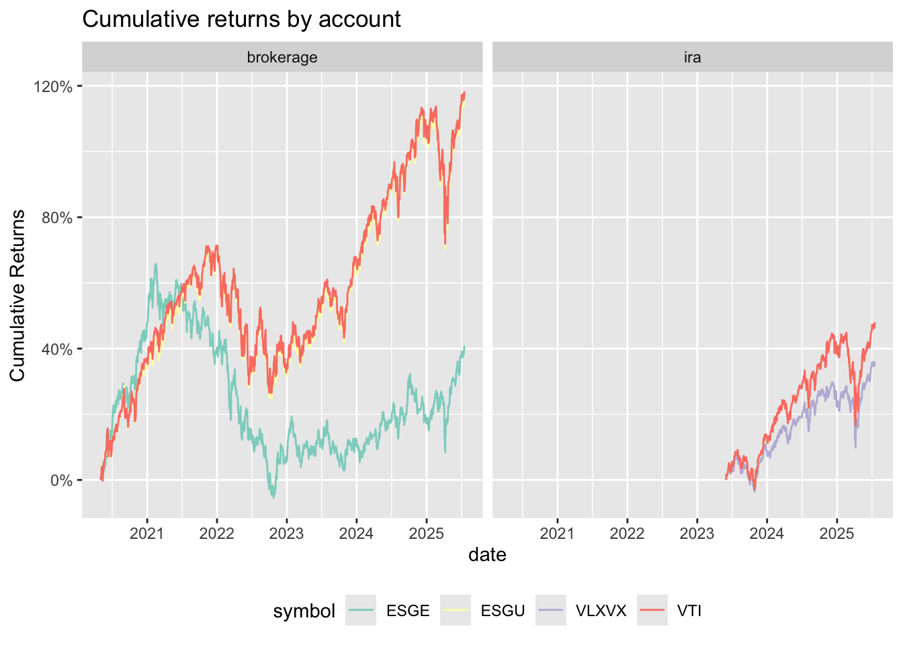
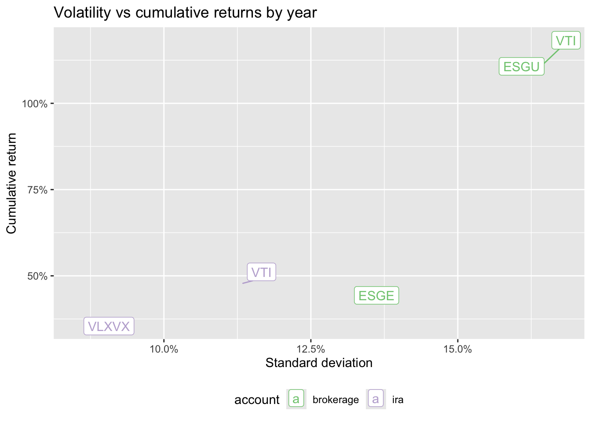

library(tidyverse)
library(tidyquant)
brokerage <- c("ESGE", "ESGU", "VTI") |>
tq_get(from = "2020-05-01") |>
mutate(account = "brokerage")
ira <- c("VLXVX", "VTI") |>
tq_get(from = "2023-06-01") |>
mutate(account = "ira")My initial retirement strategy
(short) Prologue
In May 2020, I started my first full-time job as a Research Associate (read: Assistant) at the Yale Program for Financial Stability. With it came my first retirement account, disposable income, and a chance to put what I learned about financial markets and economics to work. Before I became a financial researcher, I took the normal undergraduate economics series, courses in financial economics, a seminar in the Global Financial Crisis, and lots of political economy seminars and lectures. I really did learn a lot about the economy and financial markets.
In May 2020, I was also watching (parts of) the US remake itself into a more equitable and sustainable place to live: protests after the murder of George Floyd brought more Americans into the streets than ever before; the COVID-19 lockdowns showed that we could actually improve our air quality and emissions output. People responded to these changes by looking for ways—small ways, incremental ways—to participate and investment companies responded by selling ESG investments. As a researcher, I scanned every financial article published by the New York Times, Wall Street Journal, and Financial Times, hearing lots of excitement about this movement. As a careful consumer, I wanted to express my beliefs in my purchases, including those of investments. I also thought that, if enough people did the same, we could change the world (recall that I was a researcher and just out of college).
Portfolio
With my first full-time job, I read up on r/personalfinance, created an emergency fund, loaded up my retirememnt account, and then settled on an aggressive index-fund based strategy of entirely equities, with a 60%-40% split between US and international stocks. To ESG-ify them, I turned to the internet and found:
ESGUiShares ESG Aware MSCI USA ETF, a large-blend index fund tracking closely the S&P for both environmental and social (which I cared more about) factorsESGEiShares ESG Aware MSCI EM ETF, a large- and mid-cap inded fund of emerging-market stocks
I picked these because they were well-rated (by someone on the internet, not like there’s a lot of transparency there) and had fairly low expense ratios.
What changed after Yale
In 2022, I got a new job at Cascade Data Labs (which then became Kin + Carta (which then became Valtech)). With it, I rolled my Yale 403(b) into a Roth IRA and opened a new employer-matched 401(k). Since the rollover brought the funds under my personal control, I got to choose how to allocate those funds.
I didn’t go with an ESG investment this time; I can’t remember why. I think I decided that, as the amount of money invested grew, I wanted to only focus on performance. Also, Claire turned me on to Vanguard and Vanguard onto its target-date funds. I picked the most aggressive one available: VLXVX, which skilled readers of Roman numerals will see targets gulp 2065 as the retirement year.
Now, as I start a new job, I’ll be a contractor without any 401(k) or retirement match. All of my retirement money will come under my personal control. Plus, I want my non-retirement money to start doing more and soon: Claire and I are talking about a home and kids and a car and grad school and, suddenly, I’m no longer looking at 2065 as the first date I’ll realize investment gains.
As I survey the options, I can’t justify my ESG investments on their goals anymore. I’m less the idealist and more the economist: even if I disinvested from carbon and strike-breakers and Israel, someone else will gladly pick up those assets on the cheap and fund them anyway. So long as others invest “rationally”, I need to to in order to feel like I’m making optimal decisions. Additionally, I feel the postmodern urge that, so long as I participate in the market, I won’t be more than a step away from carbon and strike-breakers and Israel. $NVDA, the largest component of ESGU, extracts lots of metals for its chips, while $AAPL is still deeply invested in Foxconn, where labor conditions are far from my ideal of dignity.
I’m sad I’m growing pessimistic but I do think that choosing investments based on my ideals has greater effect on my conscience than on people’s lives and our planet’s health.
How did I do?
First, let’s load in the price history of each stock.
brokerage |>
bind_rows(ira) |>
group_by(account, symbol) |>
summarize(
"Start Date" = min(date),
"Starting Price" = first(close),
"Ending Price" = last(close),
"Lowest Price" = min(close),
"Highest Price" = max(close)
) |>
mutate(across(ends_with("Price"), scales::dollar)) |>
knitr::kable()| account | symbol | Start Date | Starting Price | Ending Price | Lowest Price | Highest Price |
|---|---|---|---|---|---|---|
| brokerage | ESGE | 2020-05-01 | $28.46 | $39.92 | $26.89 | $47.19 |
| brokerage | ESGU | 2020-05-01 | $63.43 | $137.06 | $63.42 | $137.09 |
| brokerage | VTI | 2020-05-01 | $141.81 | $309.09 | $141.45 | $309.26 |
| ira | VLXVX | 2023-06-01 | $27.46 | $37.28 | $26.47 | $37.31 |
| ira | VTI | 2023-06-01 | $209.25 | $309.09 | $203.12 | $309.26 |
I’ll convert these returns to cumulative percentage change from their price when I purchased them.
brokerage |>
bind_rows(ira) |>
group_by(symbol, account) |>
mutate(cumulative = (close - first(close))/first(close)) |>
ggplot() +
aes(x = date, y = cumulative, color = symbol) +
geom_line() +
facet_wrap(vars(account), nrow = 1) +
scale_y_continuous(labels = scales::percent) +
scale_color_brewer(type = "qual", palette = "Set3") +
labs(y = "Cumulative Returns", title = "Cumulative returns by account") +
theme(legend.position = "bottom")
Clearly, $VTI performed the best. Happily, $ESGU did just as well. But comparing cumulative returns is the wrong focus for such a short time period, even if it is good to understand. As A Random Walk Down Wall Street argues, there’s too much randomness when looking at less than 20 or 25 years of returns to make conclusions about an investment strategy’s optimality. Instead, I want to look at whether lower returns came with decreased risk.
Did ESGE provide a better hedge against ESGU than holding VTI alone would have? To answer this question, I need to plot returns against risk, measured as variance.
brokerage |>
bind_rows(ira) |>
mutate(year = year(date)) |>
group_by(symbol, account) |>
summarize(
cumulative = (last(close) - first(close))/first(close),
stddev = sqrt(var(scale(close, center = F))[,1])
) |>
ggplot() +
aes(x = stddev, y = cumulative, color = account, label = symbol) +
ggrepel::geom_label_repel() +
scale_x_continuous(labels = scales::percent) +
scale_y_continuous(labels = scales::percent) +
scale_color_brewer(type = "qual") +
labs(
x = "Standard deviation",
y = "Cumulative return",
title = "Volatility vs cumulative returns by year"
) +
theme(legend.position = "bottom")
So, my investment decisions did, at least, reduce the volatility of returns: lower returns were associated with lower risk. Truthfully, I was happy to accept higher risk for higher returns, so I can’t say I accomplished my goal but I did choose portfolios I can defend, especially if we think that a 22 year-old Corey could have been unwisely happy to take risks.
Next post
I’d like to incorporate the expenses of each ETF and simulate the absolute returns given sample investments: I’ll pretend I invested $1,000 in my taxable brokerage account in May 2020 and $10,000 in my Roth IRA in June 2022, when I moved to Cambridge. I’ll also take out the expense ratios for each investment but not account for taxes since the account determines that, not my holdings. Then, I’ll compare that to investing the same amounts in VTI.